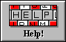

| My-T-Soft®: for Windows; Indestructible Keyboards and Indispensable Utilities; Version 1.80; User's Guide | ||
|---|---|---|
| Prev | Chapter 5. My-T-Soft Setup | Next |

Click on the Help Button.
Help brings up the My-T-Soft Help, which offers various views into this guide. Help includes help for My-T-Soft, My-T-Soft Setup, My-T-Soft Logon Utilities, and Advanced Notes. Click the Help Button or click Help on the caption bar menu to access the on-line help screens for My-T-Soft Setup. Each dialog box in My-T-Soft Setup also has context sensitive Help available by selecting the Help button.